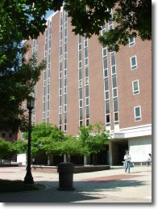

April 28-29Purdue UniversityWest Lafayette, IN |
 |
| Venue |
Program | Directions | Lodging | Support | Meals |
Organizers |
Venue
The spring 2012 edition of the Midwest Topology seminar will be held at the department of Mathematics at Purdue University.
The street address is 150 N University St, West Lafayette, IN 47907
Saturday 28
9:15
Refreshments
10:00
Fred Cohen
Moment-angle complexes, Polyhedral products and their applications
11:30
Dan Dugger
Characteristic classes for Z/2-equivariant bundles 2:30
Qayum Khan
Rigidity of pseudo-free group actions on contractible manifolds 4:00
Sasha Voronov
A higher category of cobordisms and TQFT
Sunday 29
9:15
Refreshments
10:00
Matilde Marcolli
Noncommutative numerical motives and the Tannakian formalism
11:15
Lizhen Qin
A Bona Fide CW Decomposition of Compact Manifolds Resulting from Morse Theory 1:30
Gunnar Carlson
Representations and K-theory
Abstracts
West Lafayette is on Eastern Daylight Time.
The lectures will be in Math 175 on the north side of the breezeway under the MATH building. This is the side opposite the elevators.
Refreshments will be in the Math Library Lounge on the 3rd floor. To reach it you have to cross to the side with the elevators using the breezeway or the second floor.
Campus map